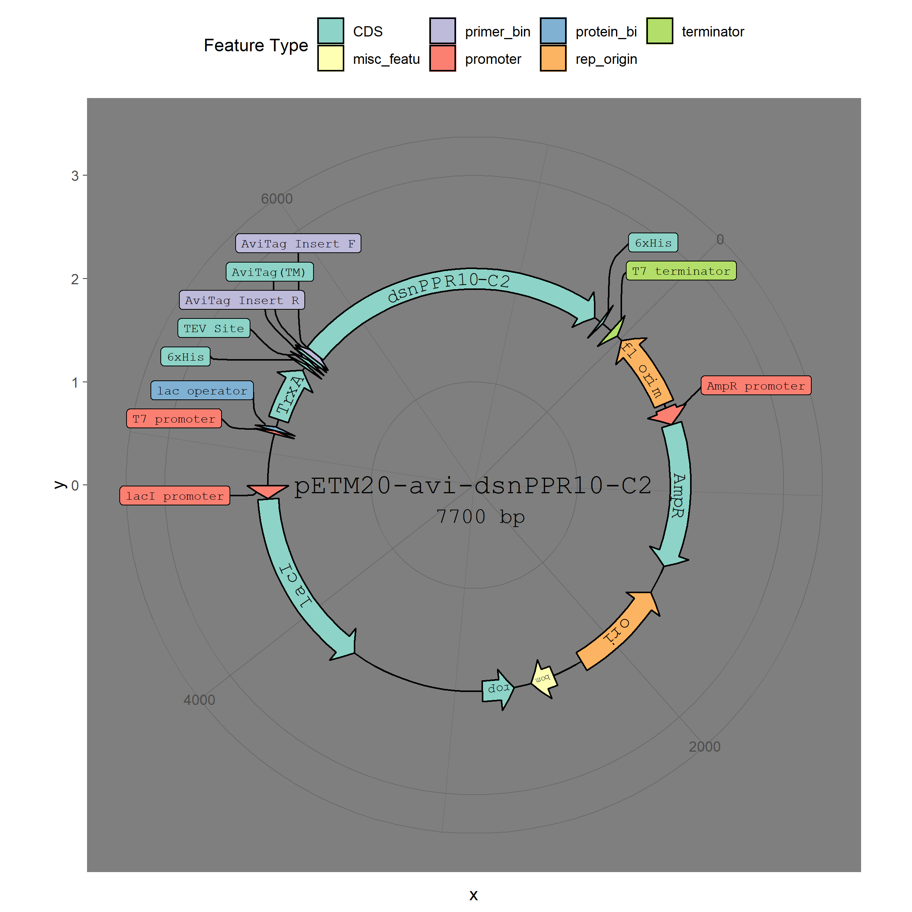
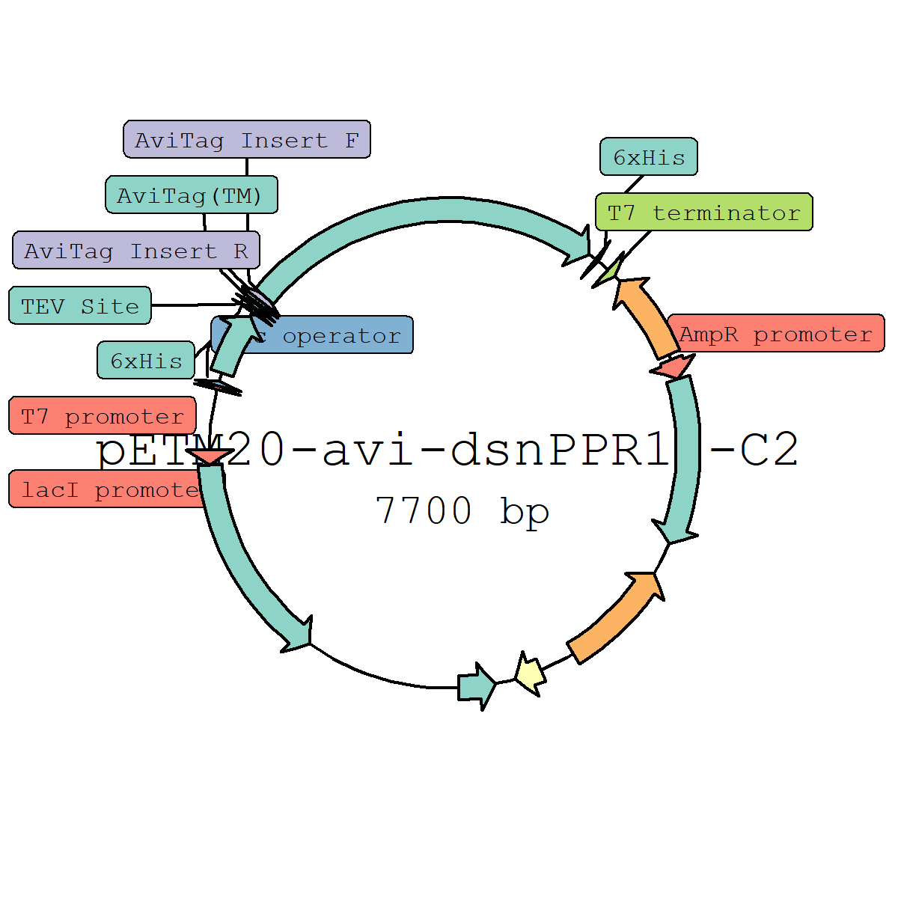

This is an R package for making plasmid maps using ggplot2.
Installation
This package is still very early in development and the API may change. The parser for
.gbfiles works most of the time but has not been tested extensively.
# install.packages("devtools")
devtools::install_github("bradyajohnston/plasmapr")Example
plasmapR provides functions for parsing and plotting .gb plasmid files.
Once a plasmid has been exported in Genbank format it can be parsed and plotted.
#devtools::install_github("bradyajohnston/plasmapR")
library(plasmapR)
plasmid <- parse_plasmid("data/petm20.gb")
p <- render_plasmap(plasmid,
rotation = 45,
plasmid_name = "pETM20-avi-dsnPPR10-C2",
curved_scaling = 1.2)
pUnder the Hood
The result of the render_plasmid() function is just a ggplot object, so you can add themes and treat it as you would any other ggplot object.
p <- p + ggplot2::scale_fill_brewer(palette = 8, type = "qual")
p
Coordinates have been transformed with coord_polar() but everything else remains the same.
p +
ggplot2::theme_dark() +
ggplot2::theme(legend.position = "top")
Major Limitations
Currently the method for curving the text results in the problem of resizing. The individual characters are spaced based on the underlying base pair counts, not plot coordinates. If you scale the plot, things start to break down pretty quickly.
I’m working on an fix that will allow resizing and scaling of the whole plot, but currently defaults are set up for a plot width and height of 8 inches each.
knitr::opts_chunk$set(fig.width = 4, fig.height = 4)
p
Scale it back
To overcome this, you must manually specify a scaling factor to reduce the size and width of the text (which will scale proportionally).
Currently the scaling factors are curved_scaling (which scales the size of the text and also the scale between the letters) and size_scale which additionally scales the distance between the letters.
Currently it’s a bad system where for a smaller image, the actual arrow is smaller and thus the distance between each individual plotted letter needs to be increased.
I haven’t figured out the way to do that well yet - so currently they are both just hacky parameters to fiddle with.
Will return to in the morning when I am less tired.
This howwerver must be specified in the original render_plasmap() call, and cannot be applied afterwards in any kind of ggplot::ggsave() call or in rendering.
I have an idea of how to overcome this, but it’ll be a while before anything is implemented or tested to see if it will even work.
p <- render_plasmap(plasmid,
rotation = 60,
name_size = 3,
plasmid_name = "pETM20-avi-dsnPPR10-C2",
curved_scaling = 0.5,
size_scale = 1.5
)
p
# ggplot2::ggsave(file = "~/../Desktop/testing.pdf", plot = p)